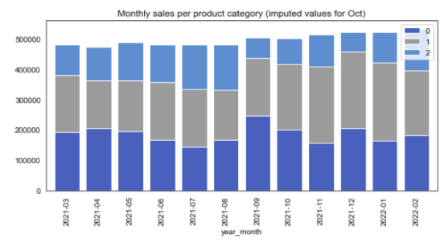
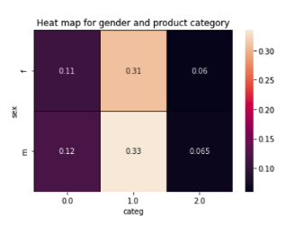

Captain Book
Captain Book, a bookstore chain, after opening quite few physical stores made the decision to go online which was a success.
To further develop the company, an analyze of the company sales was requested to target new areas of growth.
Protocol:
- Cleaning of the data by treating missing values and outliers.
- Preliminary analysis the data with:
- Indicators of central tendency and dispersion.
- A concentration analysis, using a Lorenz curve and a Gini coefficient.
- Bivariate analyses.
- Correlation analysis
- Is there a correlation between gender and categories of products purchased?
- Is there a correlation between age and:
- The total amount of purchases?
- The purchase frequency (the number of purchases per month for example)?
- The average basket size (in number of items)?
- Categories of purchased products?
Data used:
Datasets extracted from company database:- Sales (called "Transactions").
- List of customers.
- List of products.
Partial results:


